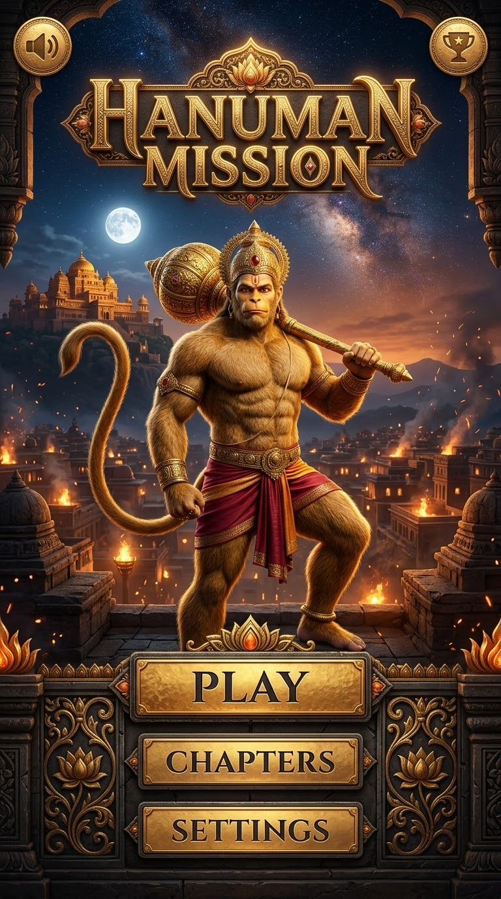
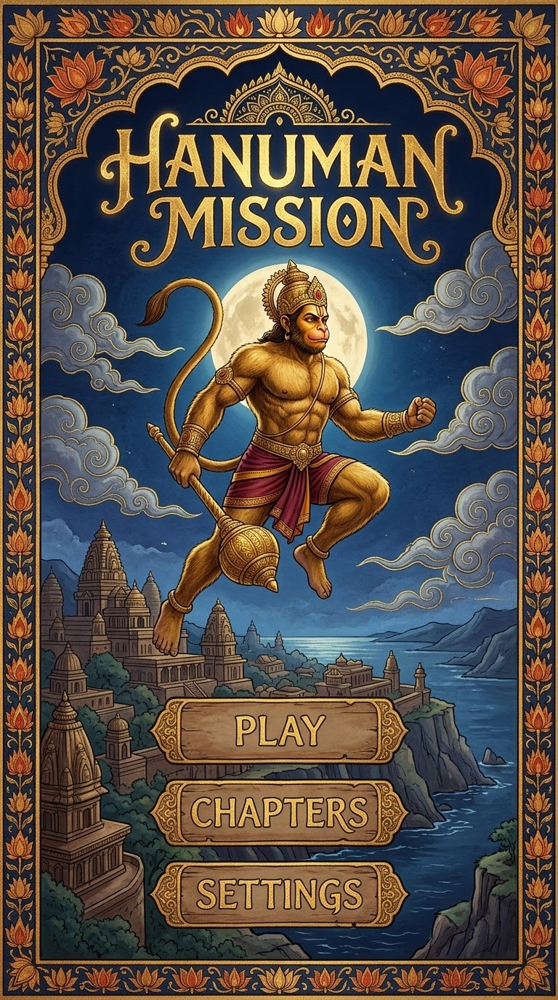
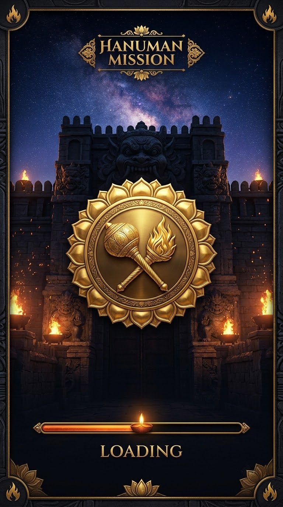
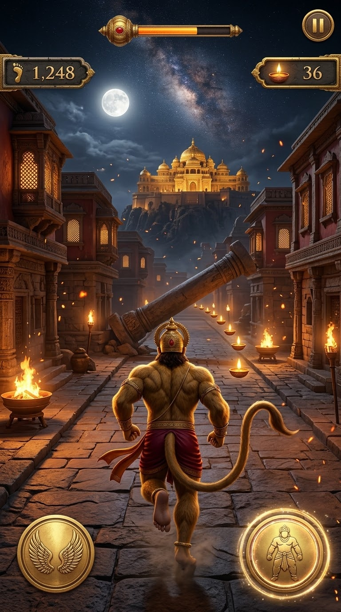
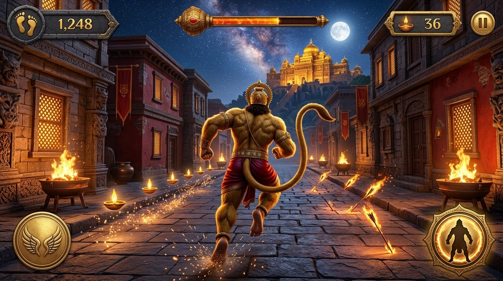
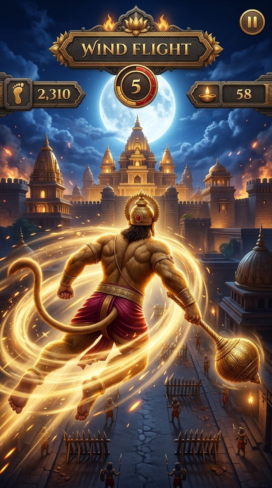
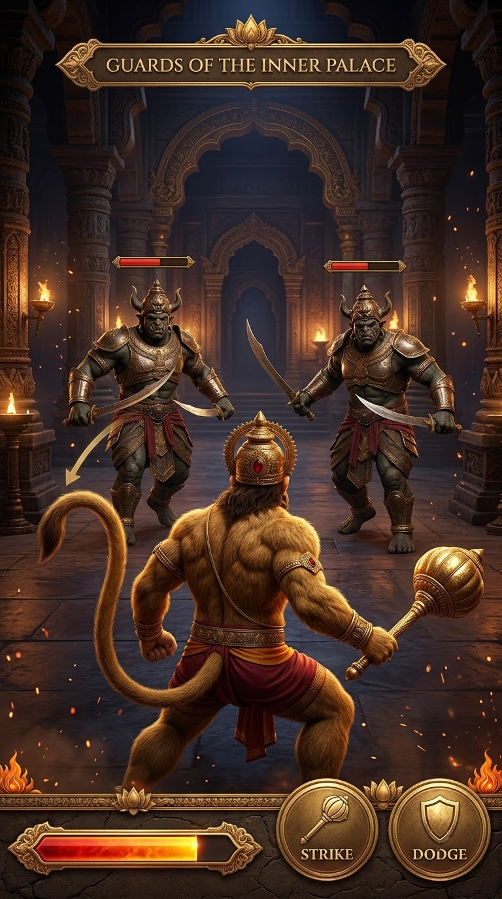
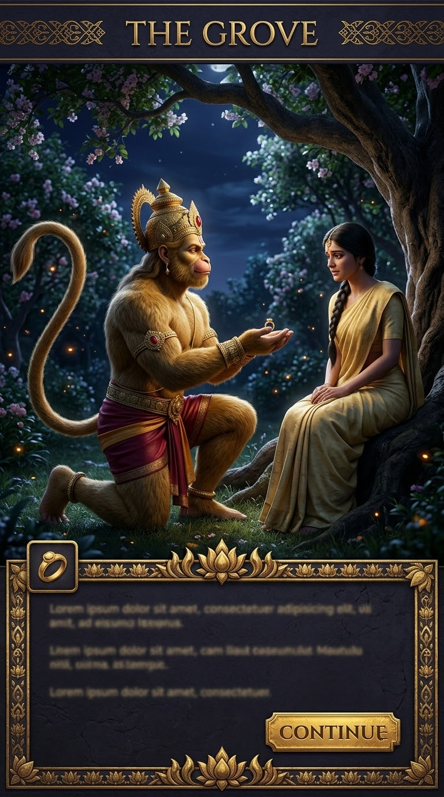
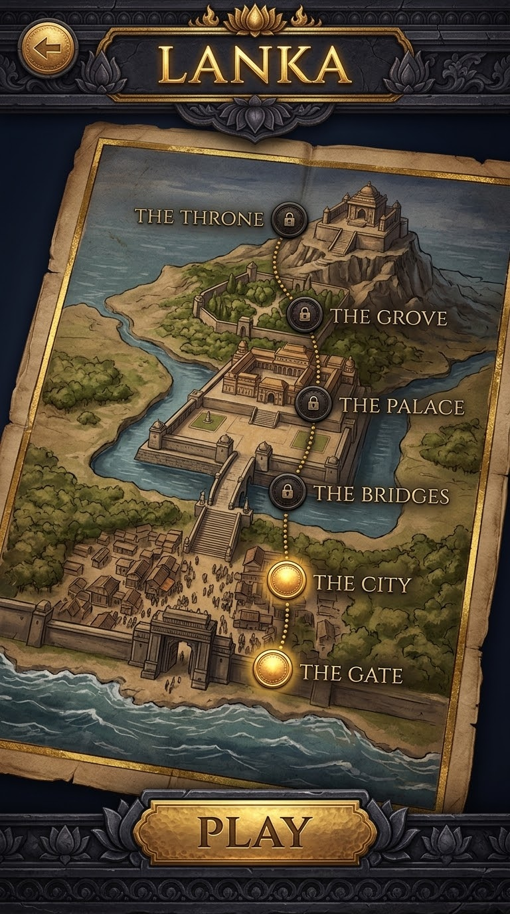
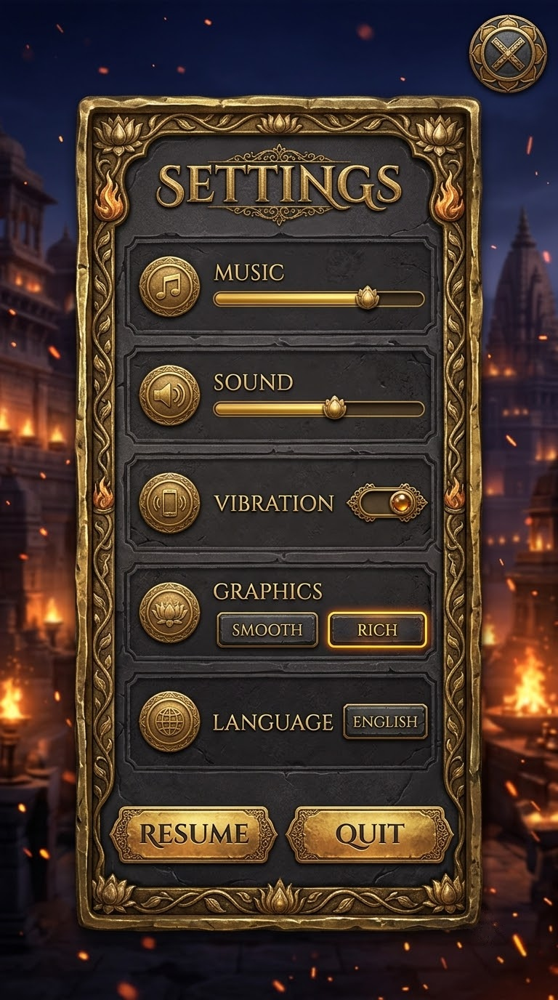
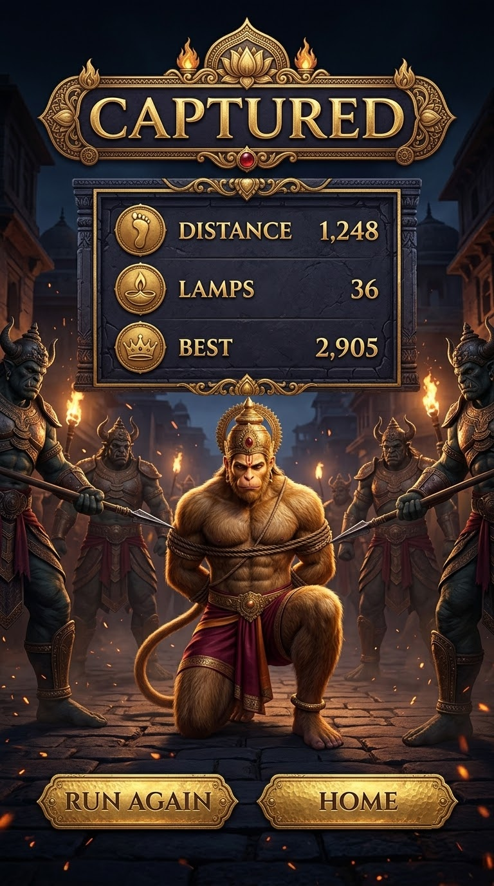
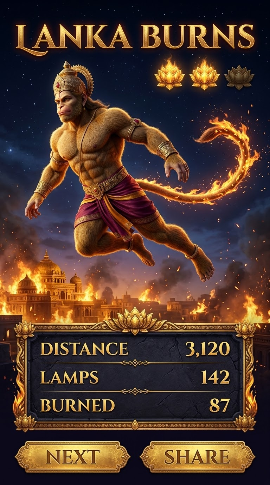
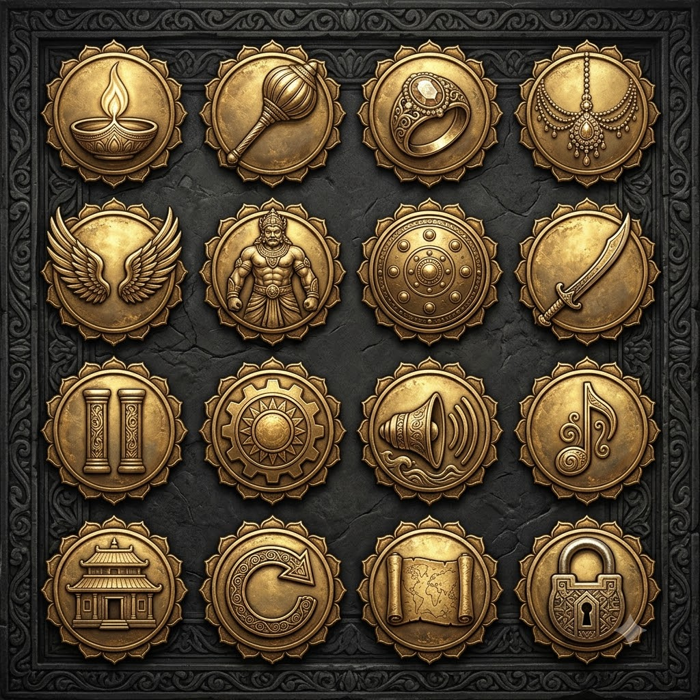
Painted mock-ups of every screen, to choose the look before the real ones are built. They are not the running game. Click a picture to see it full size. Asset library · Gameplay frames












